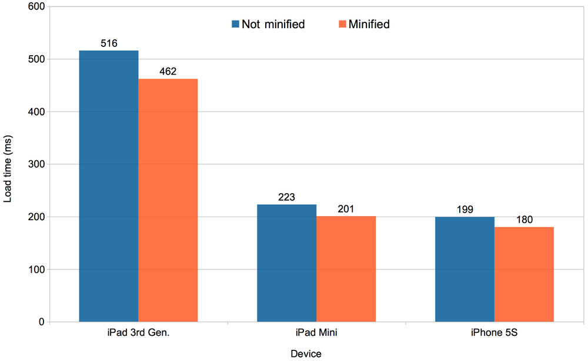
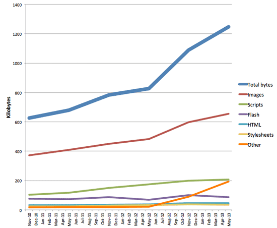

Smarter, Better Ionic

Mike Hartington
Developer Advocate
Providence, RI
Ionic!
HTML5 that acts like native
Direct access to native APIs with Cordova
Angular and Sass for superpowered development
Familiar web dev environment
What this talk is not about
An intro to Ionic
An intro to mobile development
What the hell is Cordova?
What this talk is about
Practial tips for working in Ionic
Cool tips/tricks when working with Cordova
Looking at how we can extend a blank Ionic project
Excuse to use emojicons
ಠ_ಠ
Linting
Lint all the things
The goal of this project is to help JavaScript developers write complex programs without worrying about typos and language gotchas.Stuff that we should be doing all the time
Automate that lint
Make use of gulp to handle this task
$ npm install --save-dev gulp-eslint
var eslint = require('gulp-eslint');
gulp.task('lint', function() {
// Pass the code we want to lint
return gulp.src(['./www/js/**/*.js'])
// Send that to eslint
.pipe(eslint())
// then format the out put to something readable
.pipe(eslint.format('stylish', process.stderr));
});
var paths = {
sass: ['./scss/**/*.scss'],
js: ['./www/js/**/*.js']
};
gulp.task('watch', function() {
gulp.watch(paths.sass, ['sass']);
// lint while ionic serve
gulp.watch(paths.js, ['lint']);
});
Nothing Crazy
Makes a huge differece with big apps
Huge clean up of codeSample .eslintrc file
{
"env": {
"browser": true
},
"globals": {
"ionic": true,
"IonicModule": true,
"angular": true,
"jqLite": true,
"forEach": true,
"isDefined": true,
"isNumber": true,
"isString": true,
"noop": true,
"extend": true,
"deprecated": true,
"cordova": true,
"DocumentTouch": true
},
"rules": {
"quotes": false,
"no-underscore-dangle": false,
"no-unused-expressions": false,
"curly": [2, "multi-line"],
"strict": false,
"no-use-before-define": false,
"eqeqeq": false,
"new-cap": [2, {"capIsNew": false}],
"dot-notation": [2, {"allowKeywords": false}],
"no-console": false,
"no-return-assign": false,
"no-shadow": false,
"comma-dangle": false,
"camelcase": [2, {"properties": "never"}]
}
}
Sits in your project's root
There's also JSCS
Linting plugins for all your editors
Uglifying
MINIFYING/UGLIFYING YOUR CODE
Quicker download times for your users?
Reduced number of HTTP requests?
Speed up script execution times?
Not really needed for Hybrid Apps!
 Mobile Ice Cube blogREASONS TO MINIFY/UGLIFY FOR HYBRID
Protect your code
Extracting Souce Code From an APKCordova Hooks FTW
$ npm install cordova-uglify --save-dev
Cordova-Uglify
More straightforward - uses cordova hooks
Uglifies/Minifies JS and CSS
Comes with ng-annotate!
No extra gulp tasks/build steps needed
Handling Images
(╯°□°)╯︵ ┻━┻
Why is my app so big!!!??
Over 600KB of Images
┬─┬ ノ('-'ノ)
Maybe we should focus less on minified
code and more on optimized images?
gulp-imagemin
$ npm install --save-dev gulp-imagemin imagemin-pngquant
var imagemin = require('gulp-imagemin');
var pngquant = require('imagemin-pngquant');
gulp.task('img', function() {
return gulp.src('./images/*')
.pipe(imagemin({
progressive: true,
svgoPlugins: [{
removeViewBox: false
}],
use: [pngquant()]
}))
.pipe(gulp.dest('./www/img'));
});
Images coming from the server?
Have no fear...
Picture element in a directive
angular-picturefill
angular-responsive-img
angular-picturefill
angular-responsive-img
Cordova Tricks
How do I change my app's name?
How do I change my app's ID?
How keep my app's version in sync?
¯\_(ツ)_/¯
We can use gulp for that
gulp-cordova-bump
gulp-cordova-config
$ npm install --save-dev gulp-cordova-bump
gulp.task('bump', require('gulp-cordova-bump'));
# non-breaking bug fixes
$ gulp bump --patch
# non-breaking features
$ gulp bump --minor
# breaking changes
$ gulp bump --major
$ gulp bump --setversion=2.1.0
SEMVER FTW
Keeps your package.json, bower.json, and config.xml
Useful for developers
Plus...it's totally cool
ヾ(⌐■_■)ノ♪
gulp-cordova-config
...made by yours truly...inspired by gulp-cordova-bump
$ npm install -g gulp-cordova-config
gulp.task('config', require('gulp-cordova-config'));
# default id: com.ionicframework.app_name
# reverse domain style id
$ gulp config --appId="com.new.id"
# displayed name of your app
$ gulp config --appName="newApp"
General Message
Custimize Ionic's build setup to fit your needs
When in doubt, be lazy and automate things
Have fun with it, even if it seems too much
Always use emojicons
(•_•)
( •_•)>⌐■-■
(⌐■_■)